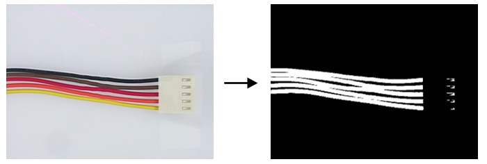

|
类型 |
分割 |
|
描述 |
使用颜色模型对RGB图像进行二值化生成区域 别名：ZV_ClrModelThresh |
|
语法 |
ZV_ClrThresh(mod,img,mask,region)
参数： mod：ZVOBJECT类型，颜色模型或颜色模型列表，出于性能考虑，颜色列表里面的色系必须相同 img：ZVOBJECT类型，3通道RGB图像 mask：ZVOBJECT类型，区域，指定img图像上要进行二值化的区域，保留逗号不填或填入未使用过的变量则全图运算 region：ZVOBJECT类型，输出区域 |
|
适用控制器 |
支持ZV功能或者5系列以上的控制器 |
|
例子 |
 ZVOBJECT img,mask,clr_model,re,dst ZV_ImgRead(img,"color.png",0) '读取图片 ZV_ImgInfo(img,0)'获取图像基本信息 ZV_ReGenFullImage(img,mask)'生成的覆盖全图的区域掩膜 ZV_ClrGen(clr_model,"color",0,143,255,136,255,143,255) '生成颜色模板 ZV_ClrThresh(clr_model,img,mask,re) '彩色二值化 ZV_ImgGenReBin(re,dst,TABLE(0),TABLE(1)) '区域转二值图像
' 白底图取反变为黑底图 ZVOBJECT temp,dst1 ZV_ImgCopy(dst,temp) ZV_ImgSetConst(temp,255) '创造白底图 ZV_MthAbsDiff(temp,dst,dst1,1) '利用图像减法得到黑底图 |